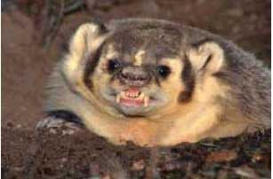

TASSO (BADGER)

| Climate/Terrain | Foreste fredde e temperate |
| Frequency | Uncommon |
| Organization | Solitario |
| Activity Cycle | Night |
| Diet | Onnivoro |
| Intelligence | Semi (2) |
| Treasure | Nessuno |
| Alignment | Neutral |
| No. Appearing | 1d2 |
| Armor Class | 6 |
| Movement | 6 |
| Hit Dice | 1 + 3 |
| Thac0 | 19 |
| No. of Attacks | 2 Artigli / 1 Morso |
| Damage / Attacks | 1d2/1d2/1d3 |
| Special Attacks | Nessuna |
| Special Defenses | Nessuna |
| Magic Resistance | Nessuna |
| Size | Small |
| Morale | Average (10) |
| XP value | 35 |
Descrizione
Questo Carnivoro presenta il corpo e il muso allungati e l'aspetto tozzo. Misura circa 1 metro con una coda che varia tra i 15 e i 20 cm. La pelliccia è grigia sul dorso e nera sul ventre; la testa presenta delle inconfondibili strisce bianche e nere. I piedi presentano dei robusti artigli, che sulle zampe anteriori possono superare i 20 cm. I maschi adulti possono raggiungere il peso di 15 kg.
Combat
Il tasso è un animale tipicamente aggressivo, nonostante sia onnivoro ha l'atteggiamento tipico dei carnivori. La sua agilità gli dona una buona classe armatura (ogni tiro su AC 7+ si considera completamente mancato).
Habitat/Society
Il tasso, dopo aver trascorso l’intera giornata nella sua tana, inizia la sua attività al crepuscolo e la prolunga per tutta la notte. Le abitudini alimentari del tasso variano con la stagione e con l’ambiente: si nutre principalmente di lombrichi, ciliegie, prugne, granturco e susine; talvolta, se disponibili, si alimenta di insetti, lumache, piccoli roditori, ricci, ghiande, noci e nocciole. La presenza del tasso può essere anche rilevata dalla presenza di latrine. Esso, infatti, depone gli escrementi in piccole fosse, appositamente scavate, profonde sino a 15 cm.
Ecology
Si ritiene che il tasso viva generalmente dai 5 ai 10 anni (1d6+4). Il tasso scava le proprie tane sotterranee nel terreno delle nelle foreste o nelle siepi.